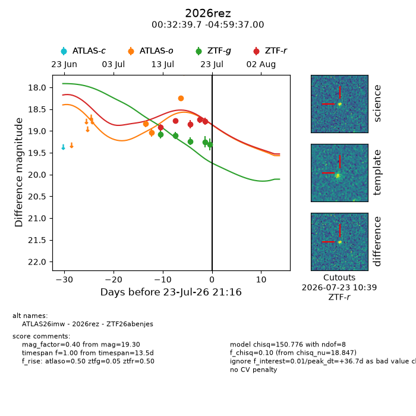
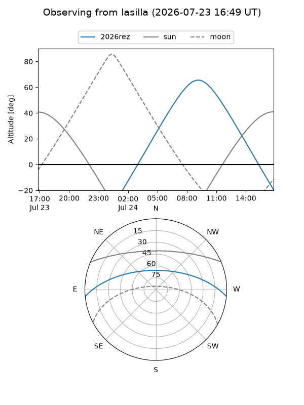
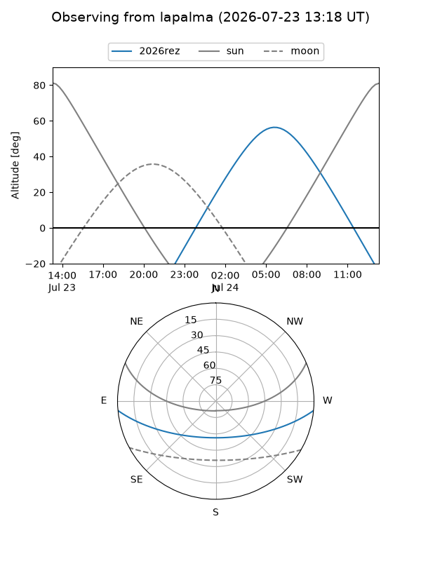
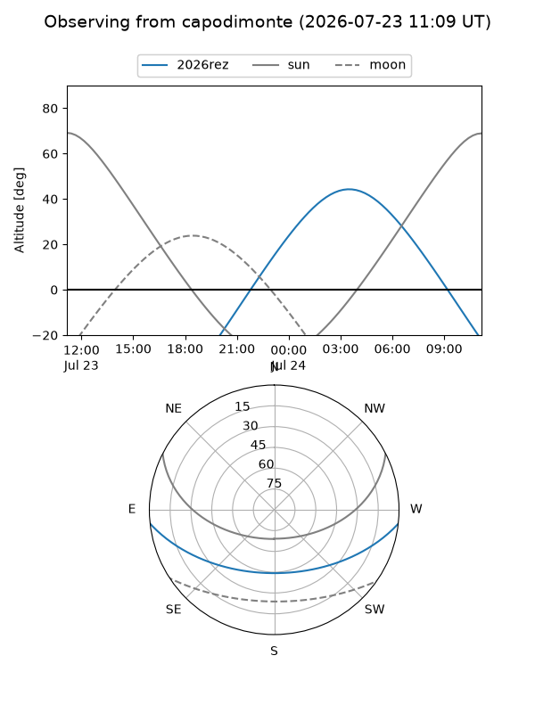
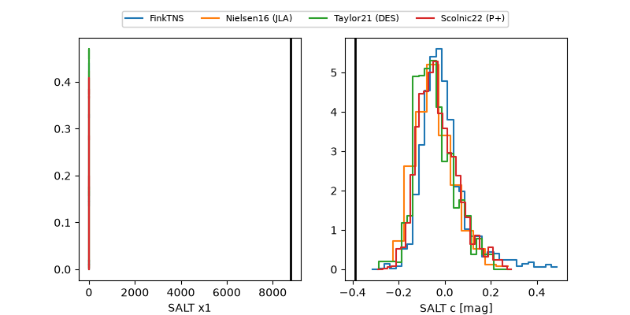

2026rez
Target 2026rez at 2026-07-23 21:19
Aliases and brokers:
FINK-ZTF: ztf.fink-portal.org/ZTF26abenjes
Lasair-ZTF: lasair-ztf.lsst.ac.uk/objects/ZTF26abenjes
ALeRCE-ZTF: alerce.online/object/ZTF26abenjes
YSE-PZ: ziggy.ucolick.org/yse/transient_detail/2026rez
TNS name: wis-tns.org/object/2026rez
Direct TNS query: direct search
alt names
ZTF26abenjes (ztf,fink_ztf)
2026rez (tns,yse)
ATLAS26imw (atlas)
Coordinates:
equatorial (ra, dec) = 8.1655,-4.99361
equatorial (HMS+DMS) = 00:32:39.71,-04:59:37.00
galactic (l, b) = (110.6751,-67.41745)
Flags:
peak dt: +36.7
Photometry:
last atlaso=18.24, ztfg=19.30, ztfr=18.78
3 atlaso, 5 ztfg, 5 ztfr detections
Lightcurve

Visibility



Additional plots
